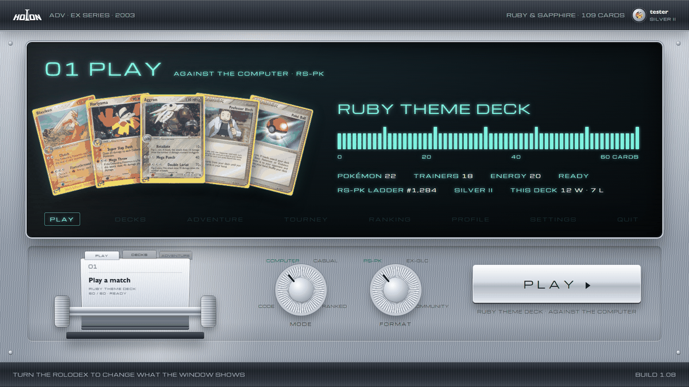
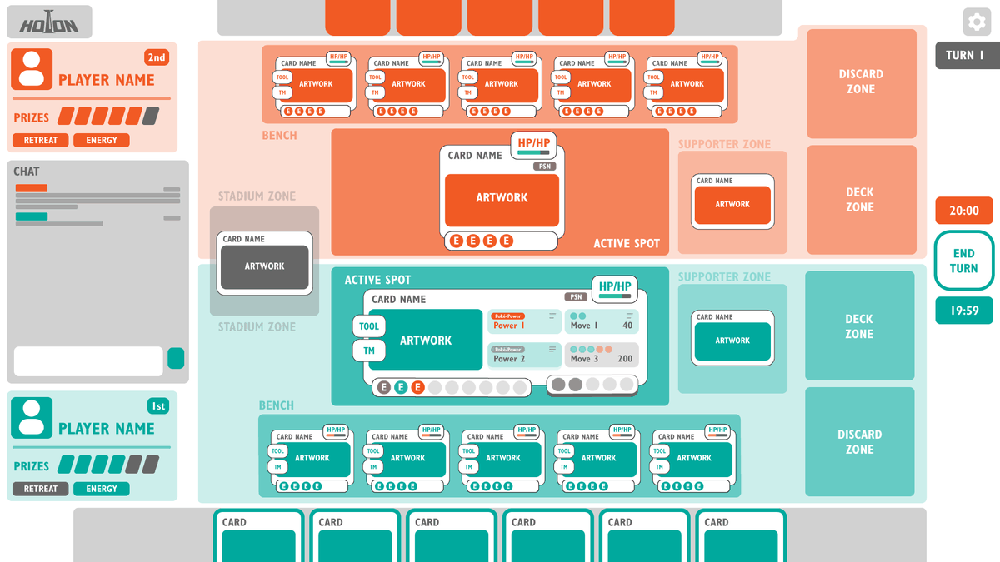
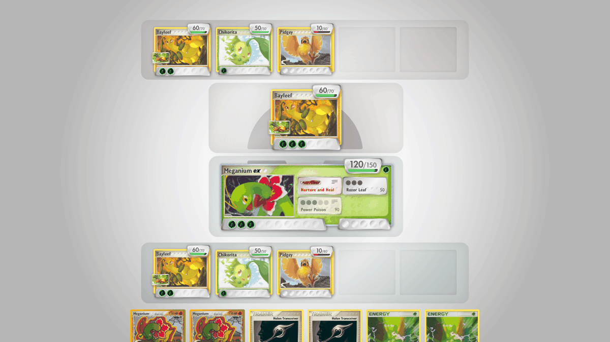
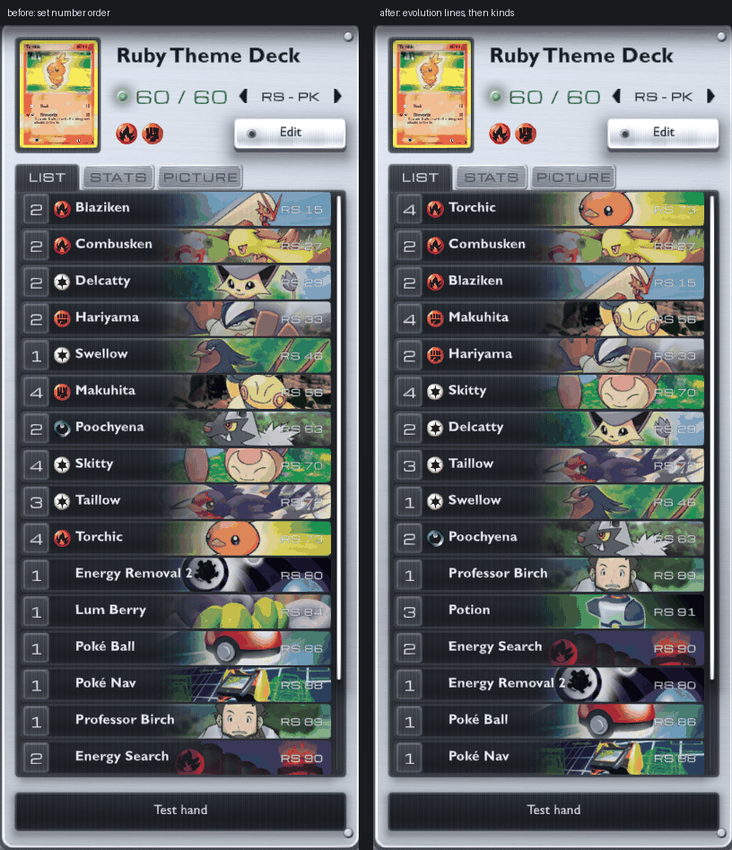
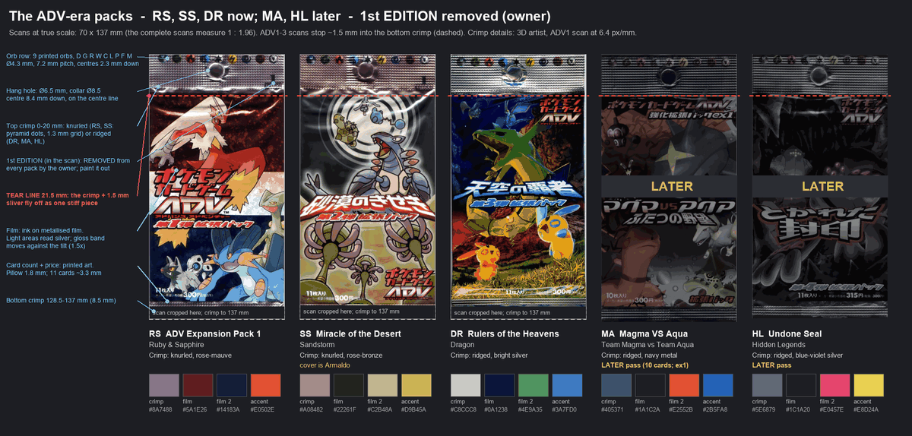

Holon
- What
- A simulator for the RS-PK retro format of the Pokémon TCG (the EX era), designed for digital
- Status
- Closed alpha, version 0.1.2
- Platforms
- Web, Windows and Android, with a game server on a Raspberry Pi
- Engine
- Unity 6
- My part
- Game design, visual design, art direction and development, building the code with AI help
- Since
- April 2025
- Inspired by
- Pokémon TCG Pocket, and the Game Boy Pokémon Trading Card Game
Designed for digital
Holon is a simulator for RS-PK, the retro format of the Pokémon Trading Card Game that covers the whole EX era, from EX Ruby & Sapphire through EX Power Keepers.
I wanted a way to play this game that feels refreshing and is designed for digital, not a paper table copied onto a screen. Pokémon TCG Pocket showed how well the TCG can be rethought for a screen. I wanted the same for the community I care about most, the RS-PK players.
This page is about the decisions behind it: how it looks, how a crowded board stays readable, how the alpha is run, and where the story mode is going.
A silver instrument from 2003
Holon should feel new, modern and functional, and still take you back to the early 2000s. Chrome does most of that work.
The first redesign of the menus got it wrong: clean, modern and bland. The direction we agreed after it fits in one line: a silver alloy instrument from 2003, holding cards that are still holo. The metal is the era's signature: the silver EX card border, the GBA SP, the MiniDisc, the translucent iMac. So the body is brushed alloy with dark rails, the cards sit in dark pockets cut into it, and holo appears only on the cards themselves, when you tilt them.

The type follows the same rule. Card names use Gill Sans, because the cards of the time were set in it, and the numbers use a Y2K techno face.
A board you can read
A Pokémon TCG board gets crowded fast: abilities that react, attacks that are locked, a Trainer that can only target some of your Pokémon. Every state of the board says one of three things:
- What a card is, and what it can do by itself. It belongs to the card, always on.
- Whether a place will accept what you're doing. It belongs to the place, and lights up only while you act.
- Whether something will react to what you're doing. It belongs to the card, as a change in its own signal.
The test of this grammar isn't whether one tricky card works. It's whether the next hundred cards arrive as configurations of it, without new code for each one.


One more decision: the board leans 12° toward you. Tilting the camera did nothing, because rotating a camera in place can't create depth, so the board itself tilts. The cards lie in it like objects on a table, while your hand stays upright: a hand is held, not laid down.
Running the alpha
One set, complete. The plan was to open the alpha with three sets. Measured against the project, that meant importing 190 more cards and drawing art for 280, with tests for none of them. Importing three sets at once would only prove they can be brute-forced. So the alpha opened with EX Ruby & Sapphire alone, complete, and the next set became a measured experiment in how well the card pipeline scales.
Real accounts from day one. The site and the builds are public, but nothing plays without an approved account. A tester asks for a seat on the Holon site, I approve them from Telegram, and the account they get carries their name and decks across devices into the beta.
Reporting a bug takes one key. F8 saves a report from any match; on a phone, you hold three fingers on the screen. The tester brief says it plainly: if you need someone's help to start a match, that itself is a bug worth reporting.
Testers shape the game. When a ruling feels wrong, it becomes a fix or a loading-screen tip; many of the tips started as questions testers asked. Every release goes through one gate that runs the whole test suite and a build before anything reaches players, and every release comes with notes written for testers, not for me.

A story mode, like the Game Boy ones
The Game Boy Pokémon Trading Card Game gave the cards an adventure. It only covered the earliest sets, and its sequel, with the Team Rocket cards, never left Japan.
Holon's story mode, still being designed, lives alongside the simulator. Players who want to test decks or run tournaments keep the simulator. Players who want an adventure travel across Hoenn from Norman to Steven, open packs as rewards, and build their deck from what they've opened. It's a collection campaign that teaches deck building one set at a time.

The bosses are meant to be hard, and each one has a trainer power: a strong move they can use once in a match, which you can't foresee just by reading their deck. Winona, the Fortree Gym Leader, flies: after she has moved her Pokémon three times in a match, she can use the effect of Gust of Wind and drag one of yours into the Active Spot.
The difficulty curve is modelled before it's played. A simulation opens thousands of packs, builds the best deck each collection allows, and estimates the win chance for every fight. AI-against-AI matches then measure what the model can only guess.
How it's made
I'm building Holon with the help of AI, particularly for the code, while I keep learning Unity. The game design, visual design and art direction are mine.
The project is documented the way a studio would document it: decision records like the ones on this page, a release gate, and rules conformance measured against the written ruleset of the time.
Holon is an unofficial, non-commercial fan project. It is not affiliated with or endorsed by Nintendo, Creatures, GAME FREAK or The Pokémon Company.